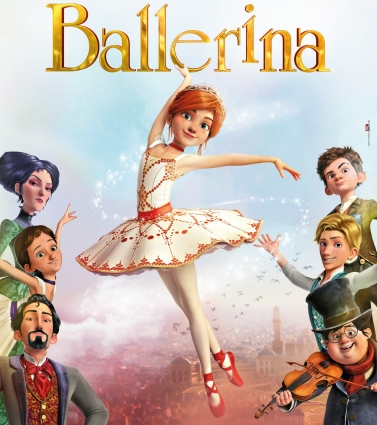

EL GRAN SHOWMAN
El mensaje más destacado e importante en «El Gran Showman» es SER TÚ MISMO. No importa lo extraño que te traten de hacer sentir, las criticas o lo que diga la gente, los defectos que tengas, no importa absolutamente nada; siempre debes sentirte orgulloso de quien eres y mostrarte auténtico. Esta película nos habla sobre la importancia de cada quién, no importa cómo eres, todos somos únicos.

HIGH SCHOOL MUSICAL
Es una historia que conjuga la vida cotidiana de los jóvenes con la música, algo muy atractivo y similiar para los adolescentes de hoy. Una herramienta muy útil que esta siendo usada por los maestros, para trabajar con los alumnos los valores como la amistad, el respeto y la coherencia. Los estudiantes que participan en el musical aprenden a navegar por sus relaciones interpersonales y a crear vínculos entre ellos, para superar los retos a los que se enfrentan en sus vidas en la escuela y en casa.
BALLERINA
El filme plasma la trepidante historia de Felicia una niña huérfana que, tras perder a sus padres, vive en un orfanato situado en un pequeño pueblo rural de Bretaña. Sueña con convertirse en bailarina profesional y, aunque carece de formación, no le faltan las ganas y el entusiasmo.
